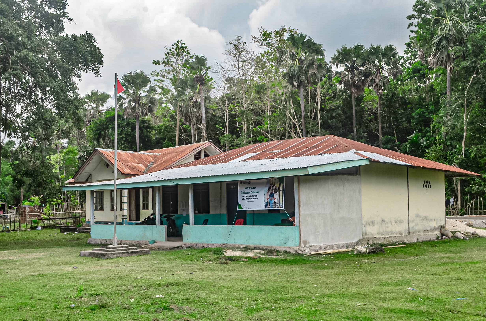

Berita Terbaru

|
Kamis, 4 Mei 2023Unkriswina Melakukan Kunjungan |
|
|
Kamis, 4 Mei 2023Unkriswina Melakukan Kunjungan |
|
|
Kamis, 4 Mei 2023Unkriswina Melakukan Kunjungan |
|
|
Kamis, 4 Mei 2023Unkriswina Melakukan Kunjungan |
|
|
Kamis, 4 Mei 2023Unkriswina Melakukan Kunjungan |
|
|
Kamis, 4 Mei 2023Unkriswina Melakukan Kunjungan |
|
|
Kamis, 4 Mei 2023Unkriswina Melakukan Kunjungan |
Sambutan Kepala Desa

| Nama | : | Darius Ndapa Tamu |
| NIP | : | - |
| TTL | : | Lainjanji, 19 februari 1990 |
| Alamat | : | Lainjanji |
| Agama | : | Kristen Protestan |
| Jenis Kelamin | : | Laki-laki |
| Jabatan | : | Kepada Desa |
| Status | : | Menikah |
| no.telp | : | 081238328728 |
Salam hormat,
Selamat datang di situs web resmi Desa Lainjanji!
Saya dengan bangga mempersembahkan situs ini sebagai wadah untuk
berbagi informasi tentang Desa kami yang tercinta. Sebagai Kepala
Desa, saya merasa terhormat memimpin Desa ini yang berkomitmen
untuk memberikan Pelayanan berkualitas tinggi dan menciptakan
lingkungan Damai dan sejahtera yang inspiratif.
Di Desa Lainjanji, Berdedikasi untuk mempersiapkan Masyarakat
kami menjadi individu yang terampil, berintegritas, dan siap
menghadapi tantangan masa depan.
Lihat Selengkapnya